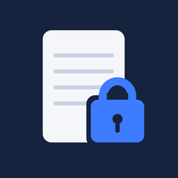

プライバシーポリシー
本プライバシーポリシーは、iOSアプリ「オフラインメモ」（以下「本アプリ」）における情報の取り扱いについて説明します。
最終更新日：2026年11月9日
本アプリに書いたメモは、暗号化したうえでお使いのiPhoneの中にだけ保存されます。本アプリはインターネットとの通信を行わず、開発者のサーバーもありません。開発者がメモの内容を見ることはできません。アカウントの登録も不要です。
本アプリは、利用者の情報を収集しないため、第三者に提供・販売することもありません。広告の表示や利用状況の解析（トラッキング）も行いません。
パスコードは本アプリにも開発者にも保存されず、メモを開くための鍵を作るためだけに使います。Face ID・Touch IDの認証はiPhone（Apple）の仕組みで行われ、顔や指紋の情報を本アプリが受け取ることはありません。
「バックアップを書き出す」を使うと、メモを暗号化したままのファイルを作れます。保存先や送り先は、利用者ご自身で選んでいただきます。本アプリが自動で送ることはありません。メモはiCloudバックアップの対象外にしています。
本アプリを削除すると、iPhoneに保存されたすべてのメモが削除されます。パスコードを忘れた場合、開発者を含めて誰もメモを元に戻すことはできません。
内容を変更する場合は、このページでお知らせします。